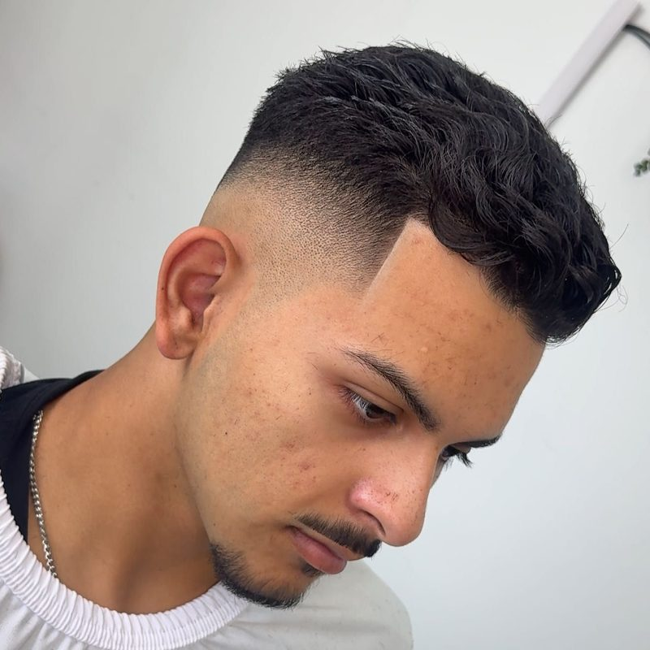
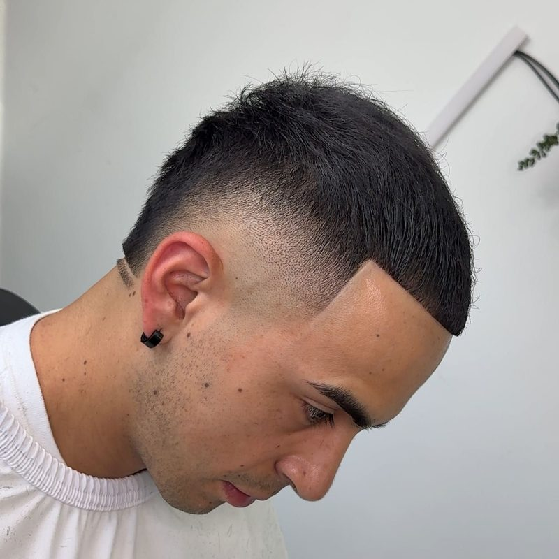
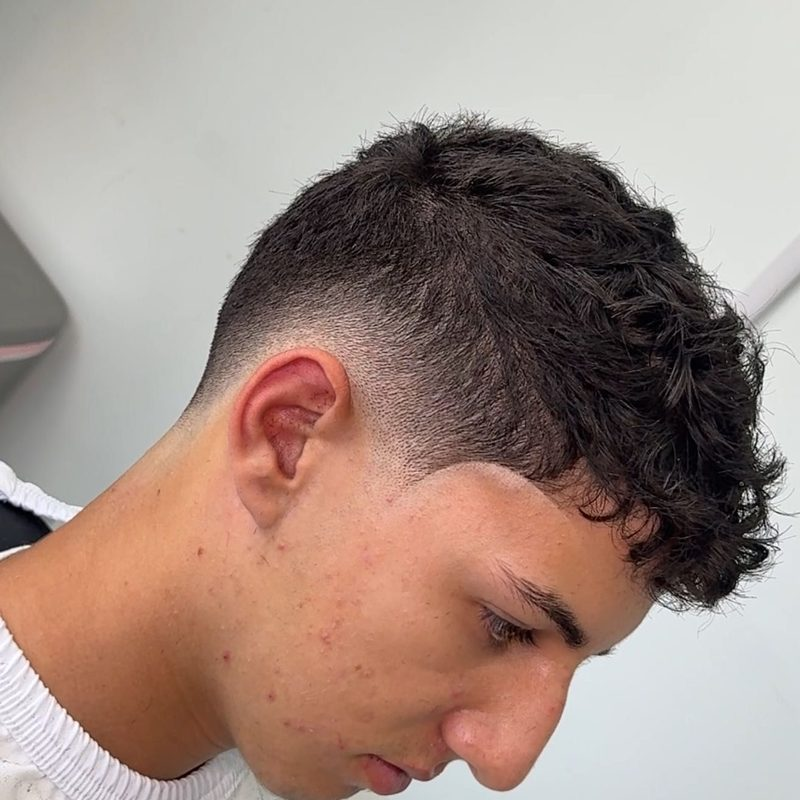
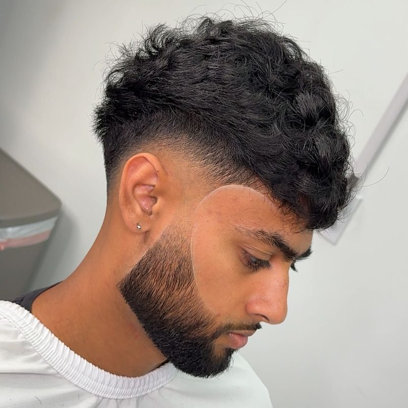
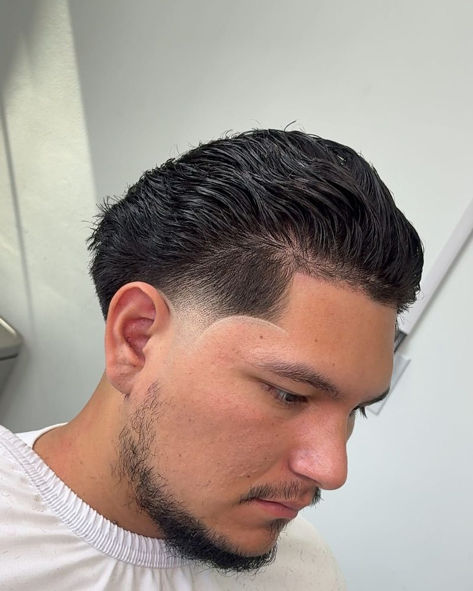
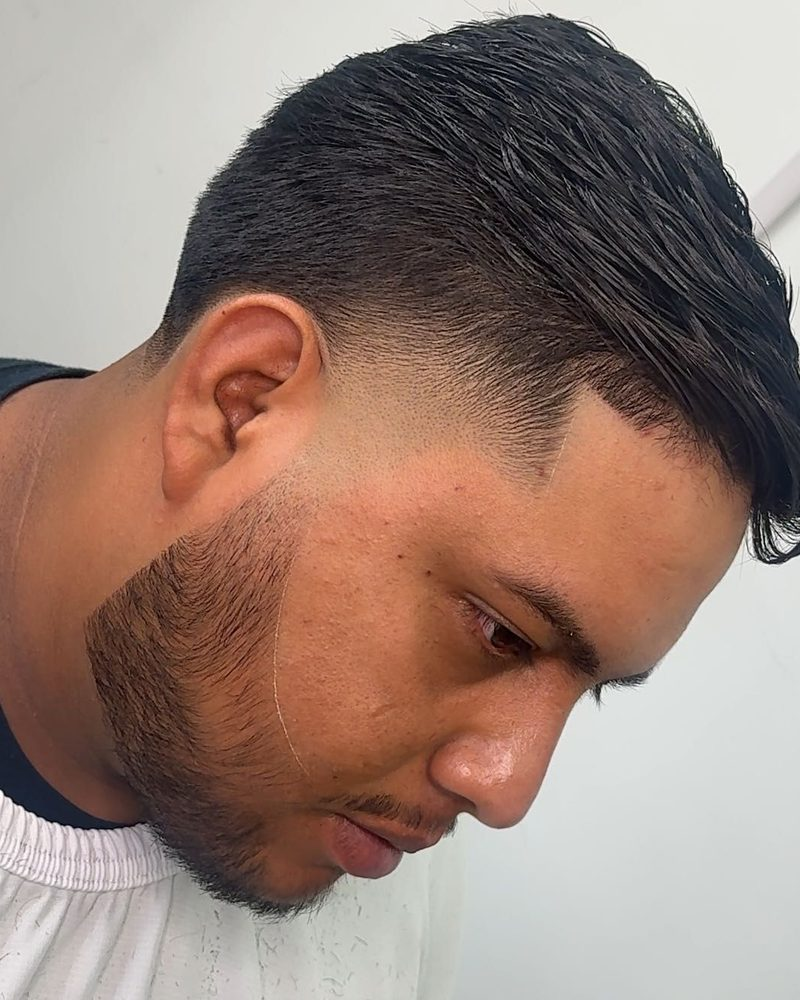
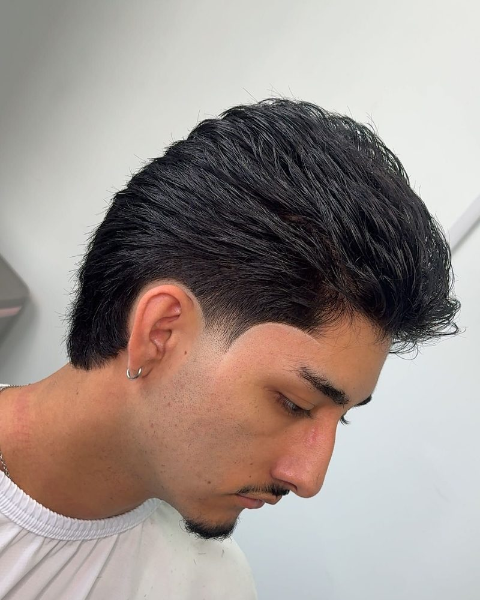
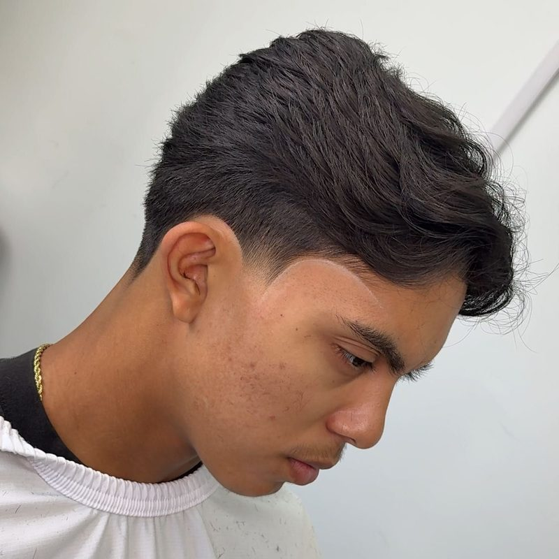
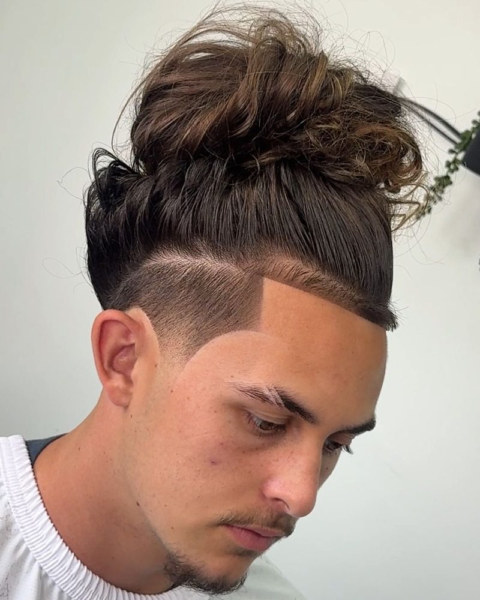

Low fade
Starts just above the ear. Clean but quiet, easy for work.
Ask for: “low fade”
¿Listo pa’ tu corte?
Tapers, fades, designs, and beard work from Nathan at Nateblendz. Find your style here, then reserve your chair on Booksy.
The work
Real cuts by Nateblendz in Tustin. Filter by style to find yours.

Short, blended sides with length kept on top.
For a fresh, classic look.

A clean blend from the sides up into the top.
For a sharp, clean look.

Blended sides that let the top keep its texture.
For keeping some length up top.

A fade blended into a shaped beard.
For the cut and beard in one visit.

Tapered sides that flow into the beard.
For keeping the beard with clean sides.

A taper with the beard cleaned up.
For a clean look without going short.

Tapered sides and neckline, with length on top.
For a grown-out style that stays neat.

Clean sideburns and neckline with the top left full.
For a soft, low-maintenance look.

A shaved line or design with tapered sides.
For adding a detail to your cut.
A slot for a before-and-after pair once Nathan shares one.
Files: photos/before-1.jpg and photos/after-1.jpg
A slot for a before-and-after pair once Nathan shares one.
Files: photos/before-2.jpg and photos/after-2.jpg
Photos from the Nateblendz Booksy portfolio. Photos © Nathan Calvillo; shown in this private preview only; they need Nathan’s permission before launch. Booksy only labels them “Haircut”, so the style labels are a best guess from the photos: confirm with Nathan.
The menu
Haircuts, fades, tapers, designs and beard work in Tustin. Pick what you’re coming in for, then book that same service on Booksy. Booksy shows current prices and open times.
Your selection
Haircut
Opens Booksy in a new tab. This page doesn’t take bookings or payments.
Style finder
Answer these and we’ll tell you which service to book and how to ask for it.
Fade guide
The most requested cuts and where each one starts. The brass line marks how high the fade goes.
Starts just above the ear. Clean but quiet, easy for work.
Ask for: “low fade”
Rises to about the temple. The most popular middle ground.
Ask for: “mid fade”
Goes up near the top of the head. Strong contrast, bold look.
Ask for: “high fade”
Only shortens at the sideburns and the neckline. The rest stays fuller.
Ask for: “taper”
Sharpens the hairline at the forehead, temples, and beard edges.
Ask for: “line-up” or “edge-up”
A general barbering guide. Your barber can tell you what suits your hair best.
Aftercare
What you do between visits matters as much as the cut.
Use a gentle shampoo a few times a week. Washing every day dries out your scalp.
A little light oil or leave-in helps with the dryness and itch after a fresh fade.
A silk pillowcase or a durag keeps everything in place and cuts down on frizz.
Touching up your line-up at home usually pushes the hairline back. Wait for your next visit.
A few drops of beard oil a day keeps it soft and holding its shape.
When to come back
| Low, mid, or high fade | 2–3 weeks |
| Taper | 3–4 weeks |
| Design | 1–2 weeks |
| Beard shaping | 2–3 weeks |
| Longer styles | 4–6 weeks |
General ranges. Your hair may grow faster or slower.
Book your next visitBeen in before?
“Before the week fills up”: confirm with Nathan.
Reminder
Everything stays on your phone. No account, nothing stored by the shop.
Rewards idea (example)
Earn points every visit and trade them for extras. The points and rewards below are examples; Nathan sets the real ones.
How to earn
Any service booked on Booksy.
When a friend you refer comes in for their first cut.
A bonus when you visit during your birthday month.
How to redeem
Added to any haircut.
Added to any haircut.
The big one.
Your points
30
This card is a demo that lives in your browser. A real program would track points automatically with each appointment.
Your first visit
13132 Newport Ave
Floor 2, Suite 230
Tustin, CA 92780
This is the address on the Tustin Booksy listing. An older listing shows Santa Ana, so please confirm on Booksy before you go.
The shop is on the second floor, Suite 230.
Parking, entrance, and elevator details will be added here once they’re confirmed.
Bring a photo of the cut or design you have in mind.
A reference picture is the quickest way to agree on the details, especially for designs.
Find us on Google
Looking for a barber in Tustin or a barbershop near you? Nateblendz is upstairs at 13132 Newport Ave, Suite 230, in Tustin, CA. Nathan does low, mid and high fades, tapers, haircut designs and straight-razor beard work for clients from Tustin, North Tustin, Santa Ana and Irvine (areas: confirm with Nathan).
Search “Nateblendz” on Google Maps for directions, photos and reviews, then book your chair on Booksy.
Find us on Google MapsGoogle reviews
Read reviews on GoogleA real client’s Google review goes here, added with Nathan’s OK.
Client name · Google
A real client’s Google review goes here, added with Nathan’s OK.
Client name · Google
A real client’s Google review goes here, added with Nathan’s OK.
Client name · Google
Reviews will show here once Nathan approves which ones to use.
Tustin barber FAQ
Nateblendz is a barber in Tustin, California, at 13132 Newport Ave, Floor 2, Suite 230. Nathan does low, mid and high fades, tapers, haircut designs and beard work. Appointments are booked online through Booksy.
A taper only shortens the hair at the sideburns and neckline, so the sides stay fuller. A fade blends the sides down to very short hair or bare skin, starting low, mid or high on the head. A taper looks softer and a fade gives more contrast.
Most fades look sharpest for about two to three weeks, so many people rebook every 2 to 3 weeks. Tapers usually hold up for 3 to 4 weeks. Hair grows at different speeds, so adjust to how your cut grows out.
Yes. The Booksy listing includes Haircut & Beard, with beard shaping by straight razor, and Haircut & Design for shaved designs. There is also a Haircut & Eyebrows option.
The Booksy listing mentions before and after hours cuts for an extra charge. The exact cost and how to arrange one aren’t posted publicly yet.
Check the Booksy listing for the latest details.
Booksy handles the booking and confirmation. This page helps you choose a service and sends you there.
Open times appear live on Booksy when you choose a service. Weekly hours aren’t posted anywhere else yet.
Current prices are listed on Booksy beside each service, so you always see the real number.